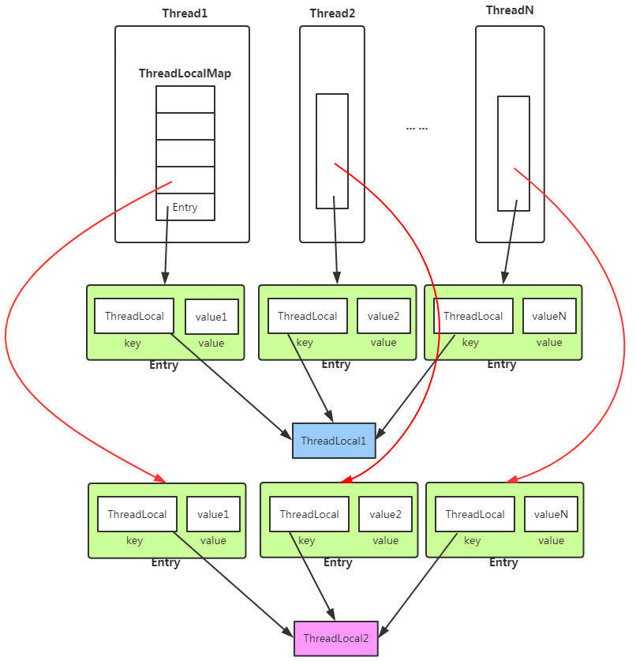
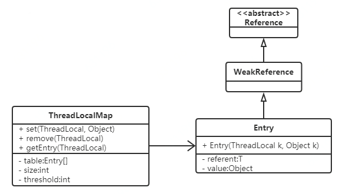

面试官:说说你的ThreadLocal的理解
什么是ThreadLocal
线程封闭
所谓线程封闭就是指为了确保线程的安全，通常需要保证可变的共享数据的同步访问，具体采用的方式有很多；但还有一种方法可以保证线程的安全，即是使可变数据不共享，或者是使数据不可变。所谓“线程封闭”即是仅在单线程中访问数据，也就是通过让可变数据不被多个线程共享以确保数据的正确性。一共有三类:
- 栈封闭
- ThreadLocal类
- Ad-hoc线程封闭
ThreadLocal是一个本地线程副本变量工具类。主要用于将私有线程和该线程存放的副本对象做一个映射，各个线程之间的变量互不干扰，在高并发场景下，可以实现无状态的调用，特别适用于各个线程依赖不通的变量值完成操作的场景。


Thread类中，有一个成员变量threadLocals，存放了与本线程相关的所有自定义信息。对这个变量的定义在Thread，而操作却在ThreadLocal类中。每个新线程都会实例化为一个ThreadLocalMap并且赋值给成员变量ThreadLocals，使用时若已经存在threadLocals则直接使用已经存在的对象。
1 | public T get() { |
应用场景
当某些数据是以线程为作用域并且不同线程有不同数据副本时，考虑ThreadLocal。
无状态，副本变量独立后不影响业务逻辑的高并发场景。如果业务逻辑强依赖于副本变量，则不适合用ThreadLocal解决。
- 每个线程需要一个独享对象（通常是工具类，典型需要使用的类有SimpleDateFormat和Random）
- 每个Thread内有自己的实例副本，不共享
- 比喻：教材只有一本，一起做笔记有线程安全问题。复印后没有问题，使用ThreadLocal相当于复印了教材。
get()与set()
set()是调用ThreadLocalMap的set()实现的
1 | public void set(T value) { |
ThreadLocalMap
ThreadLocalMap为每个Thread都维护了一个数组table，ThreadLocal确定了一个数组下标，而这个下标是value存储的对应位置。
ThreadLocalMaps是延迟构造的，因此只有在至少要放置一个条目时才创建。
1 | ThreadLocalMap(ThreadLocal<?> firstKey, Object firstValue) { table = new Entry[INITIAL_CAPACITY]; |
ThreadLocalMap初始化时创建了默认长度是16的Entry数组。通过hashCode与length位运算确定索引值i。
每个Thread都有一个ThreadLocalMap类型。相当于每个线程Thread都有一个Entry型的数组table。而一切读取过程都是通过操作这个数组table进行的。
set方法
1 | private void set(ThreadLocal<?> key, Object value) { |
将threadLocalHashCode与长度进行位运算得到索引。
threadLocalHashCode的代码如下：
1 | private final int threadLocalHashCode = nextHashCode(); |
由于是static变量，threadLocalHashCode在每次加载threadLocal类时会重新初始化，同时会自增一次，增加HASH_INCREMENT（斐波那契散列乘数，通过该数散列出来的结果会比较均匀）。
static变量也称作静态变量，静态变量和非静态变量的区别是：静态变量被所有的对象所共享，在内存中只有一个副本，它当且仅当在类初次加载时会被初始化。
而非静态变量是对象所拥有的，在创建对象的时候被初始化，存在多个副本，各个对象拥有的副本互不影响。static成员变量的初始化顺序按照定义的顺序进行初始化。
对于一个ThreadLocal来讲，他的索引值i是确定的。对于不同线程，同一个threadlocal对应的是不同table的同一下标，即是table[i]，不同线程之间的table是相互独立的。
get方法
计算索引，直接取出
1 | public T get() { |
remove方法
1 |
|
每个Thread都有一个ThreadLocalMap类型。相当于每个线程Thread都有一个Entry型的数组table。而一切读取过程都是通过操作这个数组table进行的。
线程隔离性
线程隔离特性，只有在线程内才能获取到对应的值，线程外不能访问。
Synchronized是通过线程等待，牺牲时间来解决访问冲突
ThreadLocal是通过每个线程单独一份存储空间，牺牲空间来解决冲突
关于ThreadLocal的用法有很多，比如常用的，每个线程生成一个线程不安全的SimpleDateFormat
1 | ThreadLocal<SimpleDateFormat> sdf = new ThreadLocal<SimpleDateFormat>(); |
为什么使用ThreadLocal
ThreadLocal优点
ThreadLocal缺点
- 内存泄露问题
- 由于ThreadLocalMap 的生命周期跟 Thread 一样长，如果没有手动删除（remove()方法）对应 key 就会导致内存泄漏．
- 使用完线程共享变量后，显示调用ThreadLocalMap.remove方法清除线程共享变量；既然Key是弱引用，那么我们要做的事，就是在调用ThreadLocal的get()、set()方法时完成后再调用remove方法，将Entry节点和Map的引用关系移除，这样整个Entry对象在GC Roots分析后就变成不可达了，下次GC的时候就可以被回收。
- JDK建议ThreadLocal定义为private static，这样ThreadLocal的弱引用问题则不存在了。
- 线程池中线程上下文切换
- ThreadLocal不能在父子线程中传递，因此最常见的做法是把父线程中的ThreadLocal值拷贝到子线程中
- 并行流中线程上下文切换
- 并行流底层用的是Fork/Join线程池
1
2
3
4
5
6
7
8
9
10
11
12
13
14
15
16
17
18
19
20
21
22
23
24
25
26
27
28
29
30
31
32
33
34
35
36
37
38
39
40
41
42
43
44
45
46
47
48
49
50
51
52
53
54
55
56
57
58
59
60
61
62
63
64
65
66
67
68import java.util.concurrent.atomic.AtomicInteger;
/**
* <h3>Exper1</h3>
* <p>ThreadLocalId</p>
*
* @author : cxc
* @date : 2020-04-01 23:48
**/
public class ThreadLocalId {
// Atomic integer containing the next thread ID to be assigned
private static final AtomicInteger nextId = new AtomicInteger(0);
// Thread local variable containing each thread's ID
private static final ThreadLocal <Integer> threadId =
new ThreadLocal<Integer>()
{
protected Integer initialValue() {
return nextId.getAndIncrement();
}
};
// Returns the current thread's unique ID, assigning it if necessary
public static int get() {
return threadId.get();
}
public static void remove() {
threadId.remove();
}
}
/**
* <h3>Exper1</h3>
* <p></p>
*
* @author : cxc
* @date : 2020-04-02 00:07
**/
public class ThreadLocalMain {
private static void incrementSameThreadId(){
try{
for(int i=0;i<5;i++){
System.out.println(Thread.currentThread()
+"_"+i+",threadId:"+
ThreadLocalId.get());
}
}finally {
ThreadLocalId.remove();
}
}
public static void main(String[] args) {
incrementSameThreadId();
new Thread(new Runnable() {
public void run() {
incrementSameThreadId();
}
}).start();
new Thread(new Runnable() {
public void run() {
incrementSameThreadId();
}
}).start();
}
}
- 并行流底层用的是Fork/Join线程池
总结
ThreadLocal的原理在面试中几乎被问烂了。Thread的私有数据是存储在ThreadLocalMap，通过ThreadLocal进行管理。要了解ThreadLocal的原理，最好多阅读几遍源码，尤其是ThreadLocalMap的源码部分。大家面试前要把知识点记牢。